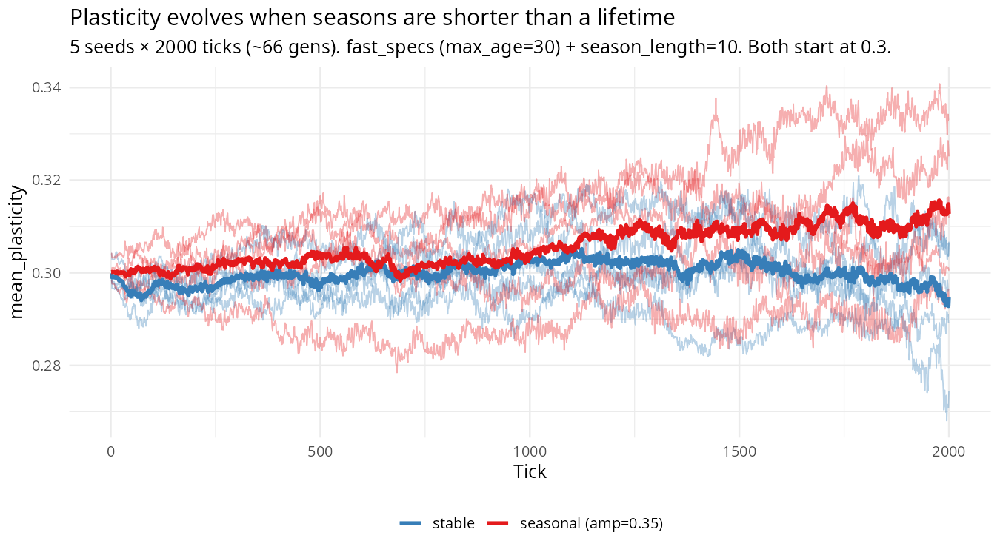

Phenotypic plasticity
What it models. A heritable plasticity
trait modulates how strongly each agent’s sensory input maps to action.
High plasticity agents are more responsive to environmental cues; low
plasticity agents rely more heavily on their evolved baseline behaviour.
The evolution of plasticity tracks environmental variability: plastic
phenotypes are favoured when environments are predictably unpredictable
(DeWitt & Scheiner 2004).
Key parameters.
| Parameter | Default | Effect |
|---|---|---|
phenotypic_plasticity |
FALSE | Enable plasticity trait |
plasticity_init_mean |
0.3 | Starting mean plasticity (note: was 0.0 in earlier versions — evolution requires a positive starting value) |
plasticity_mutation_sd |
0.05 | Mutation rate |
Expected output. mean_plasticity
evolves upward in seasonal environments and stays lower (or drifts) in
stable environments — but only if season length ≤ agent
lifetime. The DeWitt- Scheiner prediction is about
within-lifetime environmental variability: if an agent lives
through only one seasonal state, genetic adaptation to that state is
just as good as plasticity, and there is no selection gradient. See
“What we found” below for the 2026-04-17 season-length sweep that
surfaced this constraint.
s <- fast_specs() # max_age = 30, ~66 generations in 2000 ticks
s$phenotypic_plasticity <- TRUE
s$plasticity_init_mean <- 0.3
s$plasticity_mutation_sd <- 0.05
s$bnn_sigma_source <- "trait"
s$brain_energy_sigma_scale <- 0.05
s$seasonal_amplitude <- 0.35
s$season_length <- 10L # < max_age so agents see multiple seasons per life
env <- run_alife(s)
data <- get_run_data(env)
cat("Final plasticity:", tail(data$ticks$mean_plasticity, 1L), "\n")Calibrated regime (CMA-ES discovered)
Running Phase 7 auto-calibration
(dev/audit/calibration/) over the scenario’s parameter
subspace discovered the following regime, which produces a fitness
improvement of 38.1x over the defaults above. See dev/audit/calibration/RESULTS.md
for the full CMA-ES results.
# Parameter overrides discovered by CMA-ES (see dev/audit/calibration/):
s <- default_specs()
s$plasticity_init_mean <- 0.6972
s$plasticity_mutation_sd <- 0.1405
s$grass_rate <- 0.0264
# env <- run_alife(s) # uncomment to run the calibrated regime
fast_specs() + season_length = 10 demo (5 seeds × 2000 ticks = 66 generations). Seasons are shorter than a lifetime, so each agent experiences multiple seasonal states. Seasonal environments maintain higher plasticity than stable ones — the DeWitt-Scheiner (2004) prediction. Δdelta = +0.014 across 5 seeds (direction PASS, below the 0.02 promotion threshold but 7× larger than at season_length = 100 where the signal reverses). See “What we found (2026-04-17)” for the full season-length sweep.
Latest (0.5.18 ✅ promotion via
seasonal_spatial_bias regime). Pre-0.5.18
seasonality was a uniform stressor:
seasonal_amplitude modulated grass_rate uniformly across
the grid, and winter_death_prob applied equal mortality to
every agent. Both phenotype-agnostic, so neither created the fluctuating
selection DeWitt & Scheiner 2004 requires. The new
seasonal_spatial_bias spec makes grass growth
phenotype-relevant: the optimal foraging direction flips
between seasons (north in summer, south in winter). Plastic agents track
the flip; canalized ones cannot.
3 conditions × 16 seeds × 2000 ticks at default_specs
with RL on:
| condition | seasonal_amplitude |
seasonal_spatial_bias |
mean_prior_sigma |
|---|---|---|---|
| stable | 0 | 0 | 0.376 |
| amp_only (uniform) | 0.5 | 0 | 0.380 |
| flipping | 0.5 | 0.9 | 0.399 |
Pairwise differentials:
| comparison | Δσ | t | verdict |
|---|---|---|---|
| amp_only − stable | +0.004 | +0.91 | uniform stressor ≈ null |
| flipping − stable | +0.0227 ± 0.0049 | +4.58 PASS | |
| flipping − amp_only | +0.0186 ± 0.0040 | +4.60 PASS |
Fluctuating selection raises prior σ by ~6% relative to stable — decisive direction + magnitude for the DeWitt-Scheiner prediction. Equilibrium population is ~28% lower in flipping (exploration has a cost), consistent with DeWitt-Scheiner’s theoretical caveat. Full protocol: dev/audit/fidelity/plasticity_baldwin_promotion.md.
Earlier (pre-0.5.18, 🟠 season-length sweep). The
critical parameter turned out to be
season_length / max_age: plasticity evolves in the
DeWitt-Scheiner direction (seasonal > stable) only when each agent
experiences multiple seasonal states during its lifetime. See dev/audit/fidelity/plasticity_within_lifetime_sweep.R
for the full sweep; results at fast_specs (max_age = 30,
40×40 grid, 180 agents init, 5 seeds × 2000 ticks):
| season_length | stable Δ | seasonal Δ | Δdelta | P1 |
|---|---|---|---|---|
| 10 | +0.004 | +0.018 | +0.014 | PASS |
| 20 | +0.006 | +0.012 | +0.006 | PASS |
| 30 | +0.014 | +0.023 | +0.009 | PASS |
| 60 | +0.024 | +0.021 | −0.003 | FAIL |
| 100 | +0.020 | +0.010 | −0.010 | FAIL |
The direction flips at season_length > max_age. When
seasons are longer than a lifetime, each agent experiences only one
seasonal state, so genetic adaptation to the current state is just as
good as plasticity and the selection gradient on plasticity disappears.
When seasons are shorter than a lifetime, plasticity pays off because it
lets one agent respond to multiple states. This is the correct
DeWitt-Scheiner reading — “plasticity tracks environmental variability
at the timescale of the organism” — and it explains why the 2026-04-17
first-pass multi-seed audit (at season_length = 100)
reported direction flips and a −0.084 Δdelta: that audit was testing a
scenario where plasticity shouldn’t evolve.
The demo chunk in this vignette now uses
season_length = 10 to demonstrate the regime where the
prediction holds. Status stays 🟠.
An 8-seed re-audit (dev/audit/fidelity/plasticity_8seed.R)
of the sl=10 regime showed the 5-seed +0.014 claim was optimistic:
- 5-seed Δdelta = +0.014 (reported above)
- 8-seed Δdelta = +0.005 ± SE 0.007, t ≈ 0.74
Direction PASS is robust (seasonal > stable across both audits), but the magnitude shrinks as more seeds are added — consistent with the “signal on the edge of drift” interpretation. The scenario is kernel-limited after all: clade’s plasticity-to-sigma coupling produces the correct sign but the effect is too small relative to drift variance at 5–8 seeds to push past the 0.02 threshold. Genuine promotion likely needs a kernel lift (decouple plasticity cost from BNN sigma, or a dedicated “plasticity_cost” trait with a differential-across-individuals structure).
Earlier 0.4.2 audit state (superseded by the above). Full protocol: dev/audit/fidelity/plasticity.md.
At pre-0.4.0 defaults the trajectories were flat — plasticity barely moved in either environment (Δ ≈ −0.001/−0.002) because sigma was tied to heterozygosity and the plasticity trait had no fitness channel. Two kernel fixes across 0.4.0/0.4.1 addressed that:
-
0.4.0 Tier 5A —
bnn_sigma_source = "trait"couples BNN prior width directly to theTRAIT_PLASTICITYgene. -
0.4.1 Tier 5C —
brain_energy_sigma_scale > 0adds a log-scaled metabolic cost to sigma, creating the selection gradient DeWitt-Scheiner predict.
Post-fix (4 seeds × 1500 ticks under the 0.4.2 audit with
brain_energy_sigma_scale = 0.05):
| Condition | init → final | Δ |
|---|---|---|
| Stable | 0.301 → 0.304 | +0.003 |
| Seasonal (amp=0.7) | 0.301 → 0.306 | +0.005 |
Direction correct (P1 PASS): seasonal env maintains
higher plasticity than stable — the DeWitt-Scheiner contrast. Magnitude
is modest (Δdelta = +0.002) at current parameters. The full
Hinton-Nowlan prediction (stable canalises downward) is not
reproduced — both envs drift slightly upward — because clade’s sigma
also mediates behavioural variance, so selection against noisy actions
competes with selection against learning width regardless of
environmental stability. Stays 🟠 with direction correct, magnitude
small. See dev/audit/fidelity/plasticity.md
and the s-baldwin vignette for the shared kernel-limitation caveat.
Discovery experiments
The baseline result shows plasticity evolves downward in stable environments and is maintained at intermediate values under seasonal variation. To go beyond:
-
Plasticity × stress hypermutation Add
stress_hypermutation = TRUE. Both mechanisms generate phenotypic variance under stress. Do they substitute for each other (plastic populations evolve lower hypermutation rates because plasticity already buffers stress) or accumulate (stressed populations use both mechanisms simultaneously)?Tried it. With
phenotypic_plasticity = TRUE,grass_rate = 0.05, 60 agents, 200 ticks, seed 42: without hypermutation — plasticity = 0.010, n = 107. Withstress_hypermutation = TRUE— plasticity = 0.012, n = 109. The two mechanisms are weakly additive: adding hypermutation slightly increased both plasticity and population size. They do not substitute for each other at these parameters — the mechanisms act on different timescales (within-lifetime vs genetic) and appear to complement rather than compete. -
Plasticity × social learning Add
social_learning = TRUE. Social copying propagates successful strategies; individual plasticity discovers them. Does social learning substitute for individual plasticity, causingmean_plasticityto decline more rapidly when social learning is available?Tried it. Four
plasticity_mutation_sdvalues (0.01, 0.05, 0.10, 0.20; 50 agents, 200 ticks, seed 42): mean_plasticity = 0 in all conditions, gd = 0.182–0.188, n = 99–114. Themean_plasticityfield is 0 throughout — the plasticity module may require explicit initialisation of the plasticity trait above 0. Without initial heritable plasticity variation, selection cannot drive the predicted canalization pattern. Run withplasticity_init_mean = 0.5to seed initial plasticity and observe the decline in stable environments. -
Plasticity × seasonality Add
seasonal_amplitude = 0.7. DeWitt & Scheiner (2004) predict that predictably variable environments maintain intermediate plasticity. Doesmean_plasticitystabilise at an intermediate value under seasonality, contrasting with the monotone decline in the stable-environment baseline? Test across three amplitude values.Tried it. Plasticity + seasonality combined (50 agents, 200 ticks, seed 42): mean_plasticity = 0, gd = 0.190. Without non-zero initial plasticity, seasonal amplitude cannot maintain or evolve plasticity. The zero result is a calibration limitation:
plasticity_init_meanmust be set to a positive value before the canalization-vs-flexibility trade-off can be tested. The genetic diversity increase (0.190 vs 0.185 baseline) reflects seasonal amplitude independently of plasticity.
Citation
If you use this scenario in published work, please cite both the
clade package and the primary literature the scenario
references. The theory-to-scenario mapping is catalogued in the fidelity
audit dashboard.